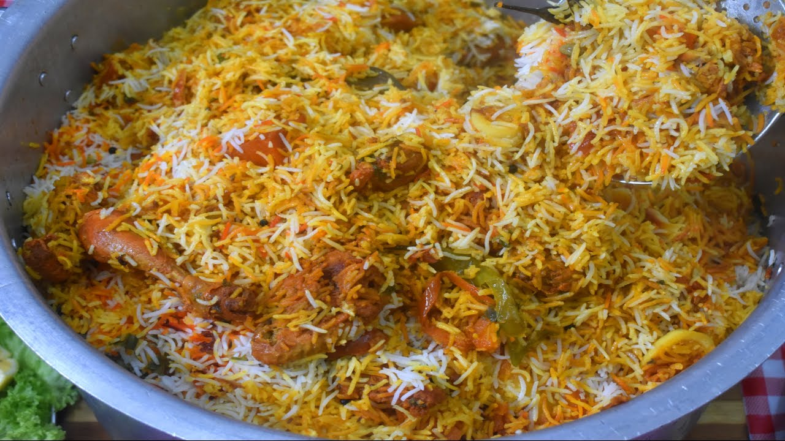

Karachi-Style Biryani

Description
Karachi style Deighi biryani is spicy, tangy and made without tomatoes and onions. This is a super easy and straightforward recipe and doesn't take too long to cook. You may use any brand sindhi and bombay biryani spice blend. I use Shan spice blend. A few tips and tricks will help you get perfectly cooked rice.
Ingredients
- 1 whole chicken (16 pcs)
- 2 tbsp ginger garlic paste
- 3 tbsp Bombay Biryani Masala
- 3 tbsp Sindhi Biryani Masala
- 3-4 Fresh Green chili
- 2 tsp roasted cumin coriander powder
- 1.5 tsp garam masala
- 1/2 tsp turmeric
- 2 tsp crushed red chili flakes
- 1 tsp salt
- 1/4 cup tomato paste
- 1/4 cup yogurt
- 1/4 cup ghee
- 4 tbsp oil
- 4 potatoes
- 1/4 tsp yellow food color
- 1/4 tsp salt
- Water as needed
For the layering
- 4 tbsp yogurt
- 2 tsp yellow food color
- Handful of cilantro
- Handful of mint leaves
- 2 green chilies
- 3 tbsp chaat masala
For the Rice
- 3.5 cup Basmati Rice
- 2 tsp cumin seeds
- 1/2inch cinnamon stick
- 1 bay leaf
- 2 fresh green chilies
- 1 black cardamom pods
- 2 tbsp salt
- 2 tbsp vinegar
- Water for boiling
Directions
- In a pot add oil and ghee, then add the chicken and marinate it with ginger garlic paste, Sindhi Biryani Masala, Bombay Biryani Masala, garam Masala, green chili, roasted cumin and coriander powder, chili flakes, turmeric, tomato paste, yogurt and salt.
- Turn on the heat and fry the marinated chicken on low heat for 3-5 minutes.
- Once the masala starts changing color and thickens, add 1/4 cup water.
- Put the lid on and continue cooking on low heat for 10 minutes.
- Meanwhile, peel and quarter potatoes and boil them for 3-5 minutes with 1/4 tsp food color.
- Drain the potatoes and add them to the same pot as the chicken and cook for an additional 3-5 minutes.
- Turn off the heat after 5 minutes.
For the Rice
- In a large pot boil around 4-5 cups of water. To this add cumin seeds, cinnamon stick, cardamom pod, green chili, bay leaf, salt and vinegar.
- Rinse and soak the rice until the water runs clear, 5 minutes prior to boiling.
- Add the rice to boiling water and boil for 5 minutes. The rice should still be uncooked from the center when you break the kernel to check.
- Drain the rice and set aside.
For the Layering
- Mix the yogurt with food color.
- Layer the chicken and potatoes in the pot with cilantro leaves, mint leaves and green chili.
- Sprinkle the chaat masala and spoon the yogurt mixed with food color over the chicken masala.
- And finally layer with the rice. Spread the rice around loosely to cover the masala.
- Turn the flame on high and cook for around 3-5 minutes until it starts to steam around the perimeter.
- Turn down the flame on medium low, cover the pot and steam cook for an additional 10 to 15 minutes until the rice is completely cooked thru.
- While serving the biryani, make sure to move some of the white rice to the side before mixing everything.
- Enjoy hot with some raita and salad!